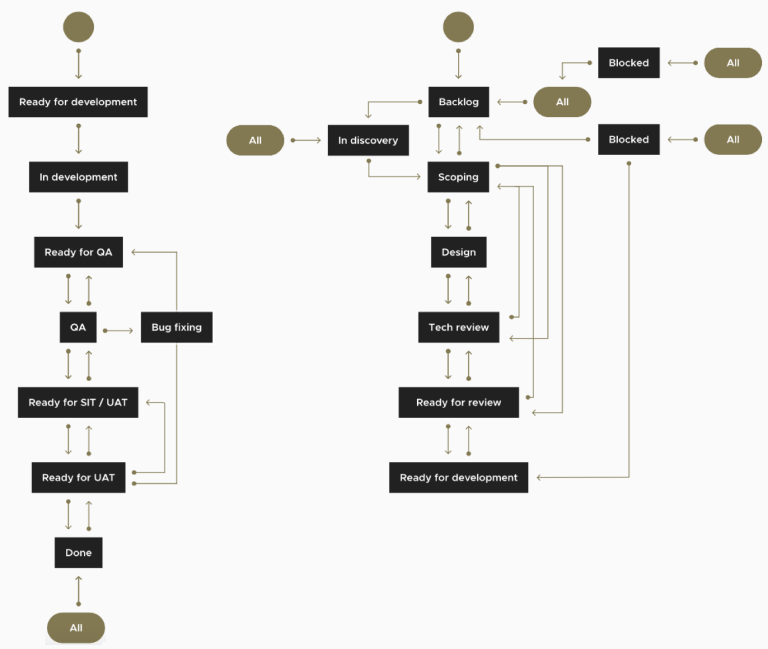
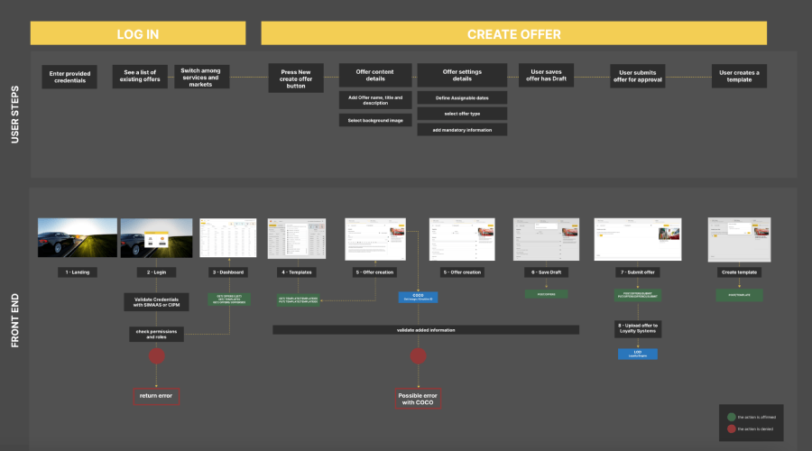

Transforming Shell Mobility
A Microservices solution
A digital transformation initiative to optimize loyalty offer management and partner integration, converting complex manual processes into a streamlined ecosystem.
Context & Contribution
In 2023 Shell partnered with DEUS.AI to address critical problems stemming from manual processes, legacy systems, and siloed teams. My contribution:
- Researched user needs, pain points, and operational constraints
- Collaborated to define problems, write scenarios, and translate requirements
- Developed interactive prototypes to validate solutions with stakeholders
- Designed intuitive and consistent user interfaces for the new platform
Problem & Opportunity
The core problem was Shell's inability to efficiently manage its Loyalty offers and partner integrations, reducing agility and leading to suboptimal user experiences. The process for new offers, for instance, typically consumed 8-12 weeks per offer due to extensive manual steps, physical sign-offs, and legacy system updates. Key pain points included:
- Manual processes: Error prone interventions in offer creation and partner onboarding.
- Legacy system limitations: Monolithic architecture impacting agility and scalability.
- Siloed Operations: Lack of cross-departmental alignment and data visibility.
- Slow Time-to-market: Inability to rapidly deploy new loyalty offers and onboard partners.
Addressing these issues, especially the $53.8 million in annual costs from errors and missed agreements, is vital for improving Shell's operational efficiency, market responsiveness, customer and partner experiences, and ultimately, sustainable growth.
Discovery & Key Insights
Technical Research: Exploring Microservices Architecture
The fragmented and monolithic nature of Shell's existing systems presented a clear opportunity for transformation. We identified microservices architecture as the optimal solution to address these core problems, enabling:
- Enhanced Agility: Faster development and deployment cycles for new features through independent service updates.
- Improved Scalability: Scaling individual services based on demand, optimizing resource utilization and performance.
- Less Interdependencies: Mitigating the risks associated with changes in monolithic systems by isolating functionalities.
- Greater Innovation: Fostering a more experimental and responsive development environment by allowing teams to work on services autonomously.
User Research: Foundations for Insight-Driven Design
- Stakeholder interviews: To gather qualitative insights into needs, challenges, and workflows.
- Task analysis: To expose the numerous bottlenecks and opportunities for automation.
- Shadowing: To provided firsthand insights into inefficiencies and workarounds in various processes.
Key Insights: Informing Strategic Decisions
- Automation is Paramount: Manual steps were the biggest impediment to efficiency, directly informing our decision to implement CI/CD pipelines.
- Data Fragmentation: Disparate systems led to inconsistent data and reconciliation errors, highlighting the need for a robust data platform and unified services.
- Importance of Role-Based Access: Granular control was crucial for different user groups, necessitating a RBAC system.
- Scalability for Growth: Future growth demanded a horizontally scalable architecture.
Vision & Strategy
Our solution was designed around four core principles to ensure robustness, flexibility, and maximum value:
- Decoupled Architecture: By treating frontend and backend modules as separate building blocks, we achieved reusability, faster development, consistent user experience, and flexible API-first logic.
- Single Customer View: By providing an end-to-end customer and partner view, enabling new insights, informed Business decisions, and optimized resource scaling.
- Cost Efficiency & Speed: By simplifying processes, reducing partner registration time, loyalty offer assignment errors, and accelerating time to market, while cutting server costs.
- Future-Proof Solutions: By designing an agnostic solution that adapts seamlessly to any data, platform, or cloud.
Challenges & Risks: Navigating Implementation Hurdles
- Integration Complexity: Integrating with existing legacy monolithic systems.
- Organizational Change Management: Addressing resistance within a large enterprise.
- Data Consistency: Ensuring accuracy across disparate systems during migration.
- Security & Compliance: Maintaining robust standards for sensitive data.
Delivery & Execution
Our delivery was conducted in an agile Scrum environment, driven by a dynamic and responsive roadmap guided by continuous feedback and integration. This iterative approach was underpinned by robust cross-functional team collaboration, fostering shared ownership and seamless translation of business requirements into technical specifications.
Technical Architecture: A Foundation for Scalability and Performance
The solution is built on a microservices ecosystem, designed for high performance and flexibility, leveraging an API Gateway for external communication and gRPC for efficient internal service interactions, all supported by a DevOps and CI/CD pipeline.
UX/UI Design: Crafting Intuitive User Experiences
The design process was deeply integrated into agile sprints, focusing on rapid prototyping, iterative user testing, and high-fidelity design. This ensured user feedback continuously refined the product and aligned with product goals, resulting in intuitive and efficient user experiences.
Achievements & Impact
Loyalty Offer assignments
(100 days to 10 minutes)
(2 days to 15 minutes)
Key Takeaway
Microservices Drive Agility
Adopting a microservices architecture fundamentally transformed Shell's ability to innovate, integrate, and scale through modularity and independent deployment.
Get in touch if you want a deeper dive or to discuss how my skills and expertise can
help on your challenges.
More about me on LinkedIn. Let's connect!